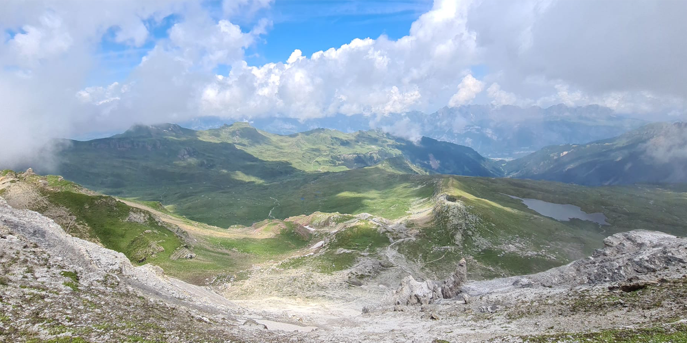
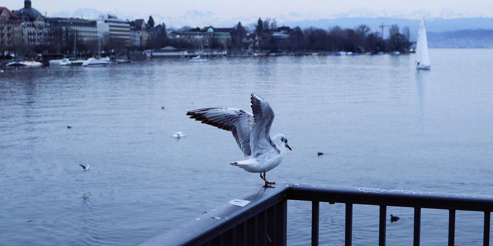
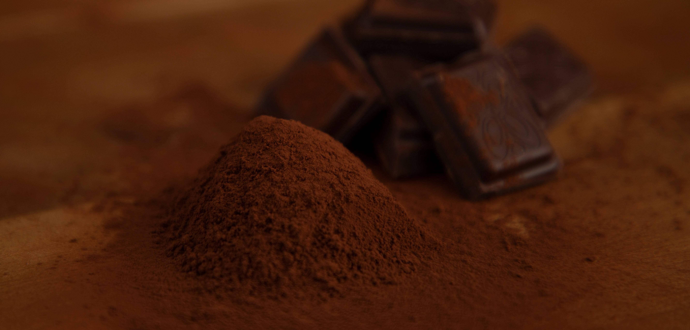
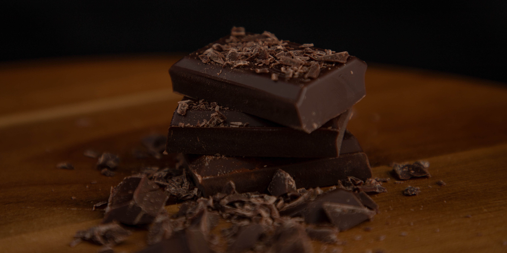

Unsere Website der LB02 ist in 2 Teile aufgeteilt. Hier auf der Startseite sind verschiedene Medien zu finden, wie zB. eine Galerie mit selbst erstellten Bildern oder eine selbst erstellte Animation. Auf der zweiten Seite (Notenschnitt berechnen) ist ein Tool zu finden, mit dem man seinen Notenschnitt berechnen kann.

Blume, Scharfer Hahnenfuss
Shot by: Robin Neher, Location: Dinhard, Zürich

Berg Panorama
Shot by: Robin Neher, Location: Flumserberg, Sankt Gallen

Möve aus Zürich
Shot by: Tim Federspiel, Location, Zürich Stadelhofen

Schokoladenpulver
Shot by: Tim Federspiel, Location: ZLI, Zürich

Schokolade
Shot by: Tim Federspiel, Location: ZLI, Zürich